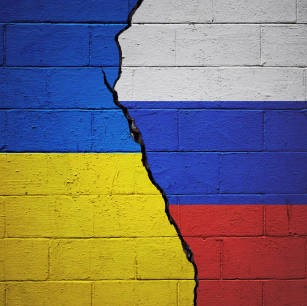

Руската инвазия в съседна Украйна през февруари показва, че геополитическите събития могат да се отразят на технологичните компании като бизнес във всеки друг сектор. Атаките бяха почти универсално осъдени и големите технологични компании отговориха по същия начин, спирайки продажбите в Русия и блокирайки използването на тези услуги там. Хардуерни компании като IBM, Intel, Samsung, Ericsson и Nokia се спрягат да изнасят за, докато доставчици на услуги като AWS и Google се спрягат да приемат нови клиенти и в някои случаи се отказват от услугите, които Русия предоставя на държавата. Медийните компании и социалните мрежи затегнаха ограниченията върху съдържанието на руските държавни медии, за да помогнат и в борбата с дезинформацията.